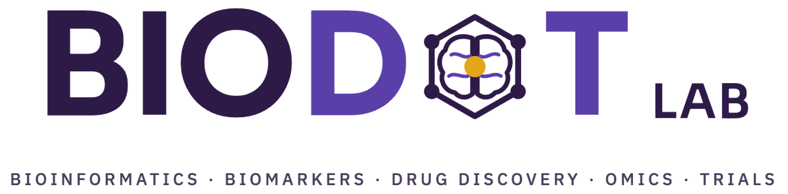

We use big data to understand amyotrophic lateral sclerosis (ALS, also known as motor neuron disease) and other neurodegenerative diseases: finding the genes behind them, the biomarkers that track them, and better ways to test new treatments.
What we do
Bioinformatics
Open tools for sequencing analysis, from DNAscan to structural variant calling.
Biomarkers
Blood and protein markers that diagnose ALS and track how fast it progresses.
Drug discovery
Using genetics and AI to find new treatment targets and rank existing ones.
Omics
Whole genomes from thousands of people with ALS, across every ancestry.
Trials
Staging, stratification and genotype-response tools that make trials work better.
Find your way around
- TeamThe people in the lab, what they work on and how to reach them.
- ResearchOur five themes, from ALS genetics to clinical trials.
- PublicationsPapers from the lab, with links to read them.
- NewsNew papers, talks, awards and what's happening in the lab.
- Collaborators and fundersThe groups we work with and the organisations that support us.
- AlumniFormer lab members and where they are now.
- Join usOpen positions and how to get in touch about PhD, MSc or postdoc work.
- GalleryPhotos of the lab, our events and the people behind the work.